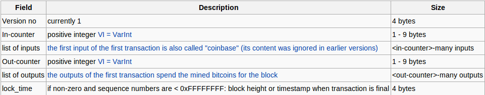

Bitcoin In Depth:
A cryptographical journey
by Maximiliano Cañellas
About Me:
Entrepreneur · Bitcoin Enthusiast · Security Consultant
What am I doing?
- Developer [at] bitcharts.io
- Security Consultant [at] sinapticasecurity.com
Bitcoin: a quick intro.
Satoshi Nakamoto

Bitcoin development:
A graphical view
Bitcoin Wallets: A quick view
1HLoD9E4SDFFPDiYfNYnkBLQ85Y51J3Zb1
(Above address is probably a Satoshi wallet)
Bitcoin wallet generation: short formula
chk3(dsha2562(IDNet1 + ripemd160(sha256(pKey)))))
Base58Encode(chk + ripemd160(sha256(pKey)))
[1] IDNet = Network Byte 0x00 for Main Network
[2] dsha256 = sha256(sha256(p))
[3] chk = checksum (first 4 bytes of dsha256)
Involved algorithms & hash functions
Ok cool, but how can we create our wallet addresses?
0 · Having a private ECDSA key
18E14A7B6A307F426A94F8114701E7C8E774E7F9A47E2C2035DB29A2063217251 · Take the corresponding public key generated with it
0450863AD64A87AE8A2FE83C1AF1A8403CB53F53E486D8511DAD8A04887E5B23522CD470243453A299FA9E77237716103ABC11A1DF38855ED6F2EE187E9C582BA62 · Perform SHA-256 hashing on the public key
600FFE422B4E00731A59557A5CCA46CC183944191006324A447BDB2D98D4B4083 · Perform RIPEMD-160 hashing on the result of SHA-256
010966776006953D5567439E5E39F86A0D273BEE4 · Add version byte in front of RIPEMD-160 hash (0x00 for Main Network)
00010966776006953D5567439E5E39F86A0D273BEETo be Continued ..
Ok cool, but how can we create our wallet addresses?
5 · Perform SHA-256 hash on the extended RIPEMD-160 result
445C7A8007A93D8733188288BB320A8FE2DEBD2AE1B47F0F50BC10BAE845C0946 · Perform SHA-256 hash on the result of the previous SHA-256 hash
D61967F63C7DD183914A4AE452C9F6AD5D462CE3D277798075B107615C1A8A307 · Take the first 4 bytes of the second SHA-256 hash (Checksum)
D61967F68 · Add the 4 checksum bytes from stage 7 at the end of extended RIPEMD-160 hash from stage 4. This is the 25-byte binary Bitcoin Address
00010966776006953D5567439E5E39F86A0D273BEED61967F69 · Convert the result from a byte string into a base58 string using Base58Check encoding
16UwLL9Risc3QfPqBUvKofHmBQ7wMtjvM
Bitcoin Wallet Generation
Now, all of this looks really hard
Thats when NodeJS come to rescue

DEMO TIME!
Bitcoin Blockchain
“A block chain is a transaction database shared by all nodes participating in a system based on the Bitcoin protocol. A full copy of a currency's block chain contains every transaction ever executed in the currency. With this information, one can find out how much value belonged to each address at any point in history.”
Great, but how does it work?
Blocks
“Data is permanently recorded in the Bitcoin network through files called blocks. A block is a record of some or all of the most recent Bitcoin transactions that have not yet been recorded in any prior blocks.”
Structure
Let's take a closer look to a Blockheader field
Blockheader Structure
Nonce
The "nonce" in a bitcoin block is a 32-bit (4-byte) field whose value is set so that the hash of the block will contain a run of zeros.
Merkle Trees
Merkle trees are binary trees of hashes. Merkle trees in bitcoin use a double SHA-256, the SHA-256 hash of the SHA-256 hash of something.
An Example: The Genesis Block
GetHash() = 0x000000000019d6689c085ae165831e934ff763ae46a2a6c172b3f1b60a8ce26f
hashMerkleRoot = 0x4a5e1e4baab89f3a32518a88c31bc87f618f76673e2cc77ab2127b7afdeda33b
txNew.vin[0].scriptSig = 486604799 4 0x736B6E616220726F662074756F6C69616220646E6F63657320666F206B6E697262206E6F20726F6C6C65636E61684320393030322F6E614A2F33302073656D695420656854
txNew.vout[0].nValue = 5000000000
txNew.vout[0].scriptPubKey = 0x5F1DF16B2B704C8A578D0BBAF74D385CDE12C11EE50455F3C438EF4C3FBCF649B6DE611FEAE06279A60939E028A8D65C10B73071A6F16719274855FEB0FD8A6704 OP_CHECKSIG
block.nVersion = 1
block.nTime = 1231006505
block.nBits = 0x1d00ffff
block.nNonce = 2083236893
CBlock(hash=000000000019d6, ver=1, hashPrevBlock=00000000000000, hashMerkleRoot=4a5e1e, nTime=1231006505, nBits=1d00ffff, nNonce=2083236893, vtx=1)
CTransaction(hash=4a5e1e, ver=1, vin.size=1, vout.size=1, nLockTime=0)
CTxIn(COutPoint(000000, -1), coinbase 04ffff001d0104455468652054696d65732030332f4a616e2f32303039204368616e63656c6c6f72206f6e206272696e6b206f66207365636f6e64206261696c6f757420666f722062616e6b73)
CTxOut(nValue=50.00000000, scriptPubKey=0x5F1DF16B2B704C8A578D0B)
vMerkleTree: 4a5e1eBitcoin Transactions
A transaction is a signed section of data that is broadcast to the network and collected into blocks. It typically references previous transaction(s) and dedicates a certain number of bitcoins from it to one or more new public key(s) (Bitcoin address).
General format of a Bitcoin transaction
Example of a Bitcoin transaction with 1 input and 1 output only
Input:
Previous tx: f5d8ee39a430901c91a5917b9f2dc19d6d1a0e9cea205b009ca73dd04470b9a6
Index: 0
scriptSig: 304502206e21798a42fae0e854281abd38bacd1aeed3ee3738d9e1446618c4571d10
90db022100e2ac980643b0b82c0e88ffdfec6b64e3e6ba35e7ba5fdd7d5d6cc8d25c6b241501
Output:
Value: 5000000000
scriptPubKey: OP_DUP OP_HASH160 404371705fa9bd789a2fcd52d2c580b65d35549d
OP_EQUALVERIFY OP_CHECKSIG
Mining
“ Mining is the process of adding transaction records to Bitcoin's public ledger of past transactions. This ledger of past transactions is called the block chain as it is a chain of blocks. The block chain serves to confirm transactions to the rest of the network as having taken place. Bitcoin nodes use the block chain to distinguish legitimate Bitcoin transactions from attempts to re-spend coins that have already been spent elsewhere.”
A few keypoints
- The Computationally-Difficult Problem
- The Difficulty Metric
- Reward
Difficulty
- The Computationally-Difficult Problem Mining a block is difficult because the SHA-256 hash of a block's header must be lower than or equal to the target in order for the block to be accepted by the network. This problem can be simplified for explanation purposes: The hash of a block must start with a certain number of zeros.
- The difficulty is the measure of how difficult it is to find a new block compared to the easiest it can ever be. It is recalculated every 2016 blocks to a value such that the previous 2016 blocks would have been generated in exactly two weeks had everyone been mining at this difficulty. This will yield, on average, one block every ten minutes.
- Reward: When a block is discovered, the discoverer may award themselves a certain number of bitcoins, which is agreed-upon by everyone in the network. Currently this bounty is 25 bitcoins; this value will halve every 210,000 blocks. Additionally, the miner is awarded the fees paid by users sending transactions.
Sources:
Fin ;)
¿Dudas? ¿Preguntas?
Contact Me:
- Email: maxi.canellas@gmail.com
- Twitter: twitter.com/maxidev_